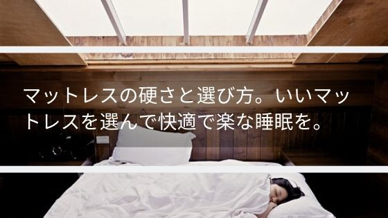
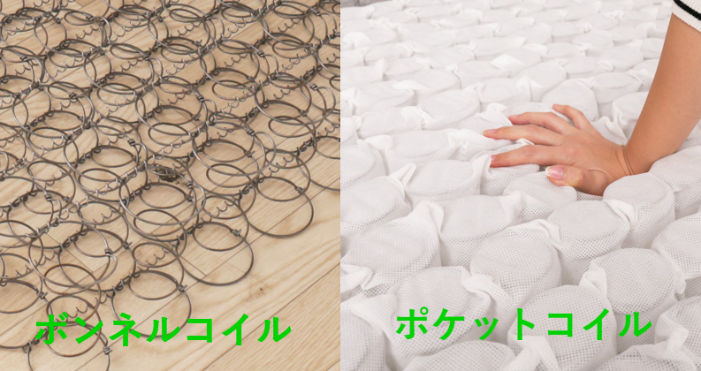
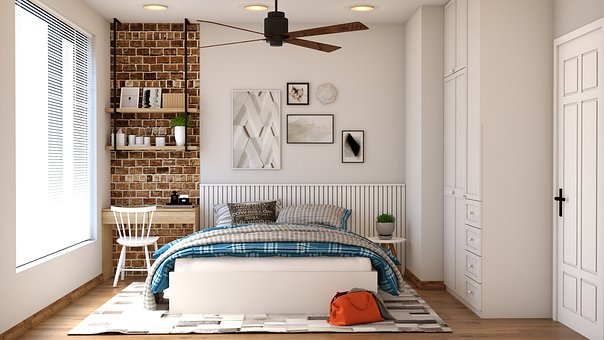
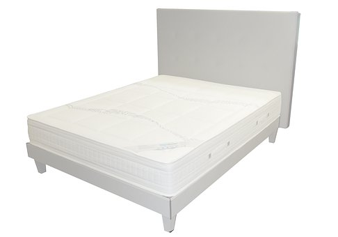

マットレスの硬さと選び方！いいマットレスを選んで快適で楽な睡眠を
人生を楽にするのにいい睡眠はかかせません。いい硬さのマットレスを選んで快眠したいですね。
今までの人生の経験から誰かに伝えたいことを聞くとよく出る意見に、「寝具にはお金をかけたほうがいい」というのがあります。
これは人生の３分の１は睡眠の時間なのだからその睡眠の質をよくすることによって人生の質を高めて楽に快適に過ごしていけるというものです。
私個人もこの意見には大賛成です。ただ、寝具をよくするのはわかるけど具体的にどうすればいいのか？と疑問に思われるかもしれません。
この疑問にはいいマットレスを選ぶことを一番重要だと答えます。マットレスを皆さんに知ってもらうために今回はマットレスについて書きます。
【硬さ】マットレスの疑問【選び方】
マットレスの種類と硬さ。選び方は？
マットレスにはコイルを使ったマットレスと使っていないマットレスがあります。
今回はコイルを使ったマットレス「ボンネルコイル」と「ポケットコイル」の特徴と違いを説明します。
まず「ボンネルコイル」ですがこちらは弾力の強い繋がったバネによって体を支える構造のマットレスです。
「ポケットコイル」に比べ硬めなのが特徴です。そして通気性に優れており、汗を多くかく人や湿気の多い部屋に住んでいる場合におすすめできます。
バネで出来ているため振動が伝わりやすいため２人以上で寝るときは気になることがあるので注意が必要です。
また、海外では「ボンネルコイル」のほうが人気がある国が多いです。ホテルに使われているマットレスも「ボンネルコイル」をよく見かけますね。
次に「ポケットコイル」のマットレスですが、こちらは柔らかくコイルが１つ１つに分かれている構造のマットレスです。
柔らかく腰、肩、背中への負担を軽減してくれるのが特徴です。そのため肩こりにもなりにくいですね。「ボンネルコイル」に比べて安価なものも多いです。
日本では「ポケットコイル」のほうが売れているようですね。私が普段使っているのも「ポケットコイル」のマットレスです。
２種類のコイルマットレス説明いたしましたが、実はもう一つコイルマットレスの種類があります。
それは「高密度スプリング」です。こちらは「ボンネルコイル」の振動が伝わりやすい部分を軽減し体重による沈み込みをなくすことで体への負担を減らすのが特徴です。
「ボンネルコイル」同様に通気性に優れており、カビやダニの発生を抑えてくれるのがよいですね。
マットレスの魅力は？敷布団だけでよくない？
マットレスと敷布団の役割ですがどちらも自重でかかる重圧を分散させることによって楽な状態を作り出してくれます。
マットレスも敷布団もない状態で寝ると床が硬く体が痛くて寝にくいと思いますが、それを軽減しているのがマットレスや敷布団となります。
そして敷布団とマットレスの違いですが、体への負担の軽減の大小になります。
マットレスは体への負担の軽減が大きく、敷布団は小さいです。
どうしてもマットレスを買うことができない事情があって敷布団だけ買うことがある際は出来るだけ分厚い敷布団を選ぶとよいですね。
マットレスの体を包み込んでくれる感覚が睡眠の質を上げておりぐっすりと眠れます。
ベッドも必要？床に直接おいてもいい？
寝具の専門店とかにお話しを聞くとできればベッドの上で使ったほうがよいとのことです。
理由は通気性がよくなるため、湿気対策になり、カビの繁殖を防ぐことができるとのことです。
ただ、私個人はベッドを使っておらず、今のマットレス５年使っていますが特にカビなども発生せずに使えています。
マットレスの寿命は？長持ちさせるこつもしりたい。
いいマットレスを選ぶと寿命は１０年くらいといわれています。
１０年たっていなくても、へこんで戻らなくなっていたり、へたってきたりしていた場合は買い換えたほうがよいですね。
定期的にマットレスの上下や表裏を変更することで長持ちします。日干ししてカビの対策もおすすめです。
マットレスの処分方法って困らない？
購入した店によっては引き取ってくれるところがあります。なのでお店の選び方も大切です。
引き取ってもらえないのであれば引き取り業者か自治体に依頼して持って行ってもらうのが一般的です。
ただ、一度買ったら数年は処分しないようなものなので処分するときになってから考えてもよさそうですね。
まとめ
マットレスの魅力とマットレスの種類についてどうでしたか？
いいマットレスを使って、良い睡眠生活で快適な人生を送ってみてください。
最後になりますが、こちらにいいマットレスありますので良ければ見てみてください。
ベッド通販専門店「ベッドコンシュルジュネルコ-neruco-」